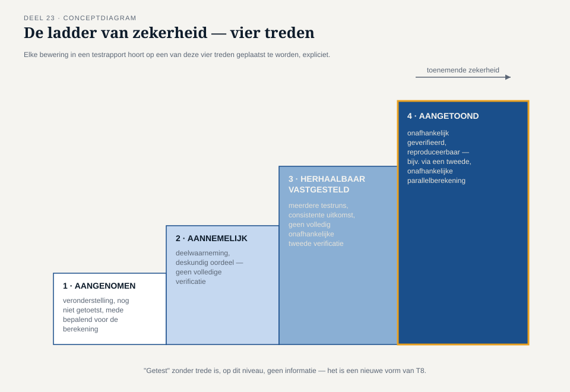
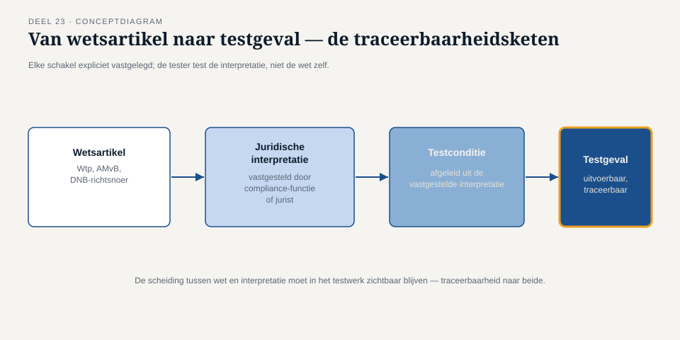

Deel 23 — Testen in de financiële sector
Slidedeck · Ductus-cursus Testen en Kwaliteitsborging · niveau 3 · deel 23 van 30 · 17 slides
Slide 1 — titleSlide
Testen in de financiële sector Deel 23 · Niveau 3 Expert
Slide 2 — statementSlide
Niveau 3 is ISTQB-only.
TMAP kent twee examens — geen expertniveau. Een bewuste, transparante keuze.
Slide 3 — statementSlide
De Stelselovergang.
Honderdduizenden aanspraken. Eenmalig. Grotendeels onomkeerbaar.
Slide 4 — sectionSlide
1. De ladder van zekerheid
Slide 5 — figureSlide

Slide 6 — statementSlide
Elke bewering in een testrapport
hoort op een van deze vier treden geplaatst — expliciet.
Slide 7 — statementSlide
"Getest" zonder trede is, op dit niveau, geen informatie.
Het is een nieuwe vorm van T8.
Slide 8 — opdrachtSlide
Opdracht 23.1 + 23.2
Plaats vier beweringen op de ladder. Herschrijf ze zonder ladder-taal — wat gaat verloren?
30 minuten.
Slide 9 — sectionSlide
2. Regelgeving als testbasis
Slide 10 — figureSlide

Slide 11 — statementSlide
De tester test niet de wet.
De tester test de vastgestelde interpretatie van de wet.
Slide 12 — opdrachtSlide
Opdracht 23.3 — Van wettekst naar testconditie
Een wetsartikel. Welke interpretatievraag eerst? Welke testcondities daarna?
20 minuten, groepjes van drie.
Slide 13 — sectionSlide
3. Compliancetesten en reconciliatie
Slide 14 — statementSlide
Duizend correcte individuele berekeningen
bewijzen nog niet dat de optelsom klopt.
Reconciliatie is de test die dat wél bewijst — of niet.
Slide 15 — opdrachtSlide
Opdracht 23.4 — Ontwerp een reconciliatiecontrole
Twee onafhankelijk vastgestelde totalen. Wat betekent een afwijking?
20 minuten, groepjes van drie.
Slide 16 — bulletsSlide
Examenaansluiting — CT-FT
- 40 vragen, 45 punten, slaggrens 30, 60 min
- CTFL vereist
- Sectorstructuur, compliance, reconciliatie, GenAI
Slide 17 — statementSlide
Volgende keer: testen onder toezicht
DNB/AFM, bewijslast, three lines of defence — de ladder van zekerheid in de praktijk.